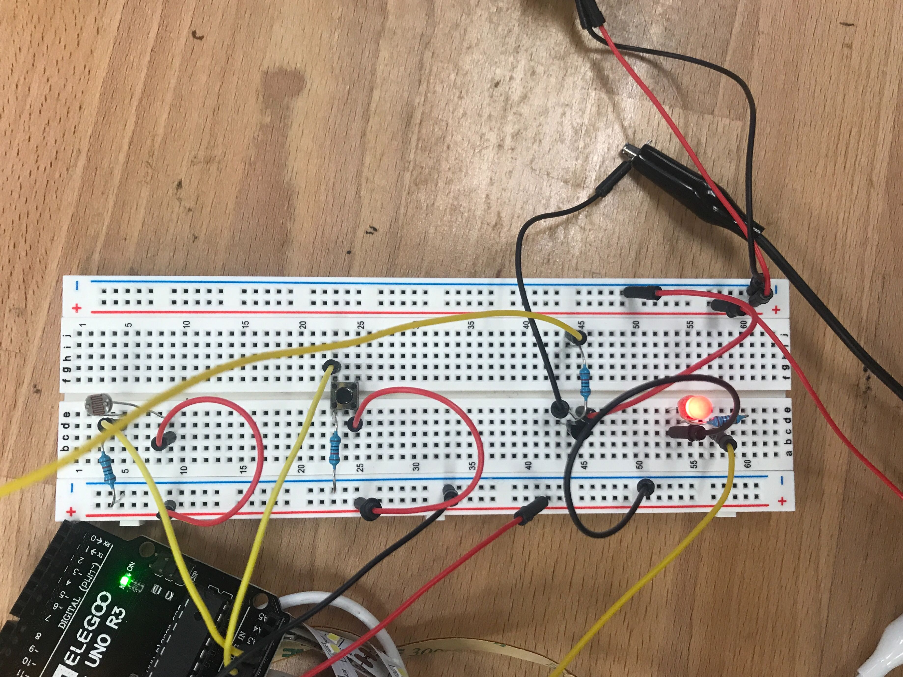
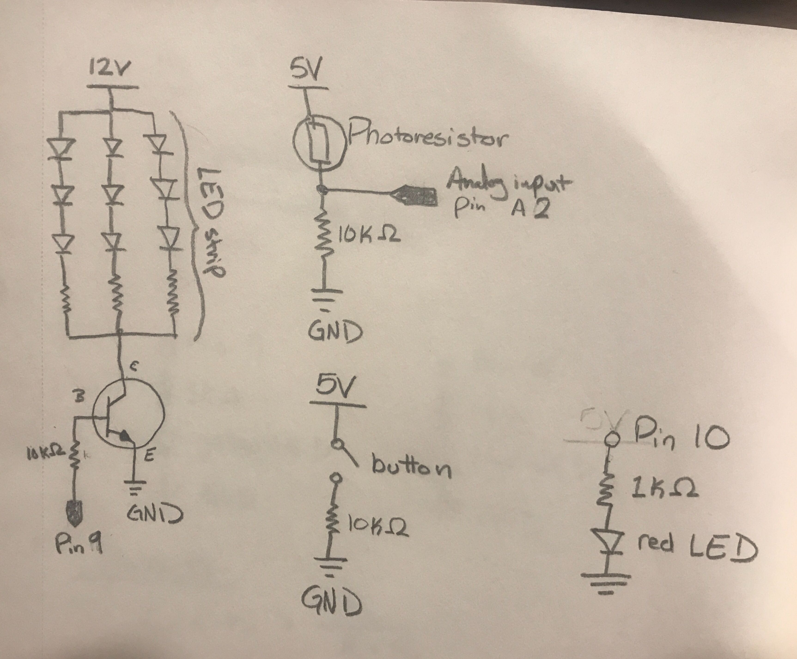

Erin Graves' Assignment 7!
Overview
Create a webpage with p5.js that interacts with your arduino. By doing things with your keyboard and mouse, things must change in the real world! Vice versa, by doing things on your arduino, the p5 page must also change. You must use JSON parsing, Serial, and p5.js. Your webpage must be interactive. You must use a minimum of two input devices from the arduino (e.g. LDR and Thermistor) and a minimum of one output device from the arduino, one of which you control with a transistor (e.g. led strip or DC motor).
Code Snippet
Arduino Code
const int ledPin = 9; // set pin 9 to LED strip
const int inPin = A2; // set photoresistor to pin A2
const int redLED = 10; // set red LED to pin 10
void setup() {
// put your setup code here, to run once:
Serial.begin(9600); // initialize serial communications at 9600 bps:
Serial.setTimeout(10); // set the timeout for parseInt
pinMode(redLED, OUTPUT); // initialize pin 10 as output for red LED
pinMode(ledPin, OUTPUT); // initialize pin 9 as output for LED strip
pinMode(inPin, INPUT); // initialize pin A2 as input for photoresistor
}
void loop() {
// put your main code here, to run repeatedly:
if (Serial.available() > 0) { // check if there's serial data
int value = analogRead(inPin); // read the analog in value of the photoresistor
int sensorValue = constrain(value, 20, 220); // limits values to specified range
int outputValue = map(sensorValue, 20, 220, 0, 255); // map values to new range of output values
analogWrite(ledPin, outputValue); // turns on the LED strip
int inByte = Serial.read(); // read the computer's output
analogWrite(redLED, inByte); // set the LED brightness
}
int s1 = analogRead(1); // set s1 as button input
int s2 = analogRead(2); // set s2 as photoresistor input
// create array with button & photoresistor values
Serial.print("[");
Serial.print(s1);
Serial.print(", ");
Serial.print(s2);
Serial.println("]");
delay(2); // 2 millisecond delay between loops
}
Sketch.js Code
var serial; // variable to hold an instance of the serialport library
var portName = '/dev/cu.usbmodem1421' //rename to the name of your port
var inData;
var dataarray = []; //some data coming in over serial!
var xPos = 0;
var outData; // data to be sent to arduino
function setup() {
serial = new p5.SerialPort(); // make a new instance of the serialport library
serial.on('list', printList); // set a callback function for the serialport list event
serial.on('connected', serverConnected); // callback for connecting to the server
serial.on('open', portOpen); // callback for the port opening
serial.on('data', serialEvent); // callback for when new data arrives
serial.on('error', serialError); // callback for errors
serial.on('close', portClose); // callback for the port closing
serial.list(); // list the serial ports
serial.open(portName); // open a serial port
createCanvas(1400, 800);
background(0x08, 0x16, 0x40);
rightSlider = createSlider(0, 255, 0); // indicate the value range for slider
rightSlider.position(width/2 + (width/2-300)/2 , height-100);
rightSlider.style('width', '300px');
}
// get the list of ports:
function printList(portList) {
// portList is an array of serial port names
for (var i = 0; i < portList.length; i++) {
// Display the list the console:
print(i + " " + portList[i]);
}
}
function serverConnected() {
print('connected to server.');
}
function portOpen() {
print('the serial port opened.')
}
function serialError(err) {
print('Something went wrong with the serial port. ' + err);
}
function portClose() {
print('The serial port closed.');
}
function serialEvent() {
if (serial.available()) {
var datastring = serial.readLine(); // readin some serial
var newarray;
try {
newarray = JSON.parse(datastring); // can we parse the serial
} catch(err) {
//console.log(err);
}
if (typeof(newarray) == 'object') {
dataarray = newarray;
}
console.log("got back " + datastring);
}
}
function keyPressed() {
//console.log("writing key");
serial.write(key);
}
function graphData(newData) {
// map the range of the input to the window height:
var yPos = map(newData, 0, 1023, 0, height);
// draw the line
line(xPos, height, xPos, height - yPos);
// at the edge of the screen, go back to the beginning:
if (xPos >= width) {
xPos = 0;
// clear the screen by resetting the background:
background(0x08, 0x16, 0x40);
} else {
// pass
}
}
function draw() {
var rightBrightness = map(rightSlider.value(), 0, 255, 0, 255); // convert slider input to brightness
rect(0,0,width,60); // background of text
outData = rightBrightness; // set data as brightness input from slider
serial.write(outData); // write data to serial
textSize(16);
text("BRIGHTNESS LEVEL: " + rightBrightness, width - 230, 40);
stroke('rgba(0,255,0,0.25)'); // green
graphData(dataarray[0]);
stroke('rgba(0,80,255,0.5)'); // blue
graphData(dataarray[1]);
xPos++;
}
Circuit
My circuit uses a photoresistor to output data read from a light or dark environment to a graph. Data is also read from a button. Both of these values are displayed on a graph. The photoresistor is in blue while the button is displayed in green. I used the serial monitor to test what the values were for light and dark environments. These min and max values were used in my map function.
My webpage includes a slider that changes the brightness of the red LED in my circuit, from a minimum value of 0 to a maximum of 255.
Schematic
The photoresistor works the same as assignment 3. The photoresistor can have a very low resistance, allowing the 5V to flow to ground and damage the arduino. Therefore an additonal 10k ohm resistor is needed. 10k ohms is safe since a maximum of 0.002A can flow through the arduino. 5V / 0.02A = 250 ohms. Therefore 10k ohms is safe.
I used a third of the LED strip and the maximum watts of the full strip is 18 watts, so my strip was 6 watts. Using the equation P = I * V, I was able to find the current through the transistor. 6W = I * 12V -> I = 0.5A. This current is less than 0.6A and can therefore travel through the transistor.
Issues
I ran into some hardware issues when trying to complete this assignment. I originally wanted to control the brightness of the LED strip with my webpage's slider. I set up my circuit exactly as I did for assignment 4, where I used a photoresistor to control a LED strip. This wasn't working so I substituted the LED strip with a single red LED and it worked! I'm still not sure why a single LED worked but not my LED strip. I had some people look over my code and circuit and they weren't sure of the issue either. I wonder if I somehow damaged the LED strip, since it remained very dim when I had it synced with the photoresistor.
Video
Controlling the LED strip with photoresistor

Controlling an LED with slider on webpage

Graphs on webpage from photoresistor and button output

Close-up of graphs